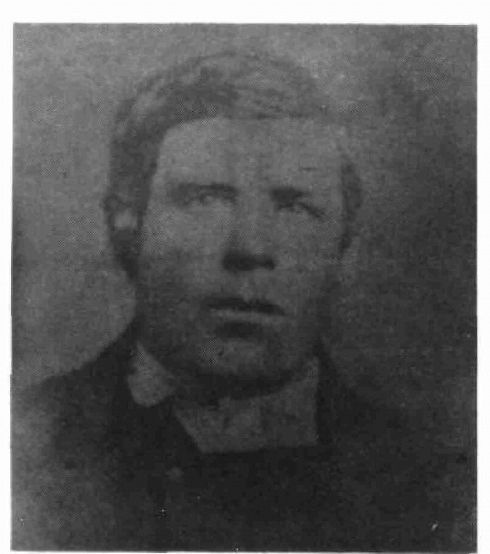

One of the seven brothers · John’s branch
John Kastl
1835–1890

What the book records
| Also written as | Jan Kastlp. 7 Chart, p. 14As printed
|
|---|---|
| Born | 29 November 1835, Všepadly, house No. 11, Bohemiap. 28As printed
|
| Occupation | Farmer; postmaster of a station called Newton, a mail center on his farmstead (Newton never became an incorporated village)p. 28As printed
|
| Married | Marie Kunes, in Bohemiap. 28As printed
|
| EmigratedThe sources differ | Arrived at Baltimore 14 August 1872 on the S.S. Baltimore, from Bremenp. 28As printed
|
| Arrived 14 August 1872 on the S.S. Berlinp. 7 | |
| Homestead | Applied 13 September 1872 at Lincoln, Nebraska, for 80 acres in Elk Precinct, Saunders County (west half of the southeast quarter of Section 30, Township 15 North, Range 5 East), near the site of Sts. Cyril and Methodius Church (Plasi); proof of homestead dated 11 March 1879; final certificate 13 March 1879p. 28As printed
|
| Died | 20 December 1890p. 28As printed
|
| Buried | Plasi, Saunders County, Nebraskap. 28As printed
|
| Noted | Son of Thomas Kastl, a farmer, and Maria, the daughter of Joseph Marselek (so spelled here), a magistrate manager from Kosenicep. 28As printed
|
Received his certificate of U.S. citizenship 16 October 1878p. 28As printed
| |
It is not known whether the family stopped in Chicago (the ship records give it as destination), Iowa or Wisconsin before coming to Nebraskap. 28As printed
| |
Lived on the farm until his death at age 55p. 28As printed
|
Family
Parents
Thomas Kastl b. 1806 and Maria Marsalek d. 1853
Spouse
Marie Kunes 1839–1934
Married In Bohemia p. 28As printed
John Kastl married Marie Kunes in Bohemia.
— p. 28
Children
- Vaclav Kastl 1864–1932
- Barbara Kastl 1866–1933
- Anna Kastl 1870–1925
- Joseph Kastl 1871–1900
- Thomas Kastl 1873–1893
- Elizabeth Kastl 1874–1926
- Cecelia Kastl 1878–1943
- Mary Kastl 1880–1956
- John Kastl 1883–1948
Read the chapter in the book: p. 28.
From the book
They chose a site which reminded them of the rolling hills of their homeland in Bohemia on which to build their home and farm yard. All that remained of it in 1978 was the windmill. The grandchildren, however, recall the large fruit orchard, the gardens and beautiful flowers. In John's testimony in his Proof of Homestead dated 11 March 1879, he said:
"I am the head of a family consisting of a wife and seven children . . . I have cultivated about 50 acres of said land built a frame house 14x16 feet a comfortable dwelling having 1 door and 2 windows and built a granary 14x16 feet and a sod house and stable and have planted about 5 acres of forest trees and dug a well . . . have raised wheat, oats, corn, barley, rye, and vegetables."